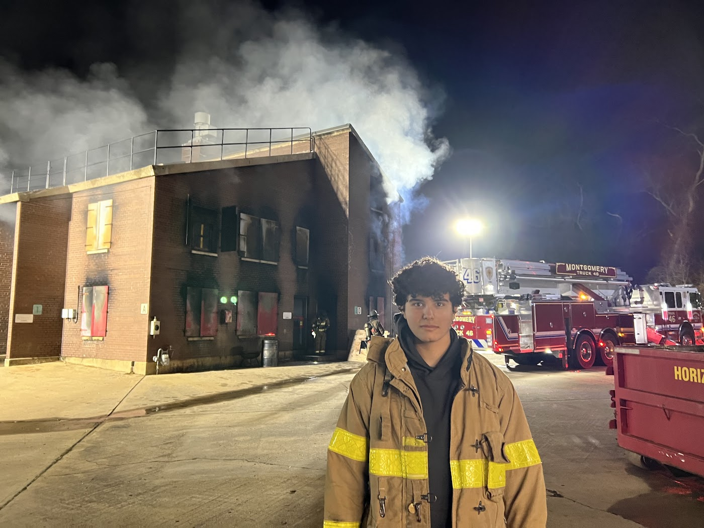

Live-Burn & Smoke Tower Evolutions • Truck 46
Fireground Operations & Crew Coordination
Training at the county smoke house and burn building with Montgomery Truck 46 builds hands-on proficiency in hose advancement, aerial ladder support, and accountability under low-visibility conditions—teaching me how crews communicate and rely on clear situational data.
Live-Burn Evolutions
Truck 46 Aerial Support
Fireground Comms